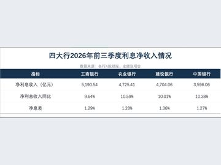
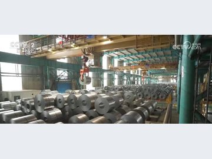

08
“辽作馆”将迎进博会首秀
本报讯 记者王琦报道 第九届中国国际进口博览会（以下简称“进博会”）将于11月5日至10日在上海举办。

商圈里新型便民消费综合体开门迎客；城市更新项目同步配套托育、养老服务点位；水网、新型电网、算力网等“六张网”工程加快铺展……“十五五”开局之年…
第一财经记者从业内获悉，11月2日上午9时左右，中国人民银行、中国证监会将召开会议，研究推动支持资本市场工具使用。同一天，中国人民银行、金融
周末影响市场的重要资讯有：①央行、金融监管总局、证监会，将于明天召开会议；②DeepSeek发布全新Agent架构；
翻开四大行的最新三季报，利息净收入增速成为共同亮点，均实现了10%左右的同比增长。

个人贷款呈现明显分化，共四家银行余额较上年末出现回落，仅农业银行、邮储银行保持正增长。
10月30日晚，中国银行发布2026年第三季度报告，业绩总体延续稳中有进态势，经营质效持续改善，利息净收入实现两位数增长，成为盈利主要支撑。
2026年前三季度，我国钢材品种结构随需求持续调整优化。

本报讯 记者王琦报道 第九届中国国际进口博览会（以下简称“进博会”）将于11月5日至10日在上海举办。
ここにはもともと2つの石棚があり、山の上が姑石、山の下が嫂石で、小姑と嫂（兄嫁）が薬草を採るという民間伝説に由来して名付けられた。
本报讯 记者崔治报道 作为辽苏科技合作大会的落地延伸成果，日前，鞍山市科技局与江苏省南京市科技局正式签订《鞍宁科技创新合作框架协议》…

10月30日，央行正式官宣政策利率“换锚”：隔夜逆回购改为固定利率、数量招标，操作利率定为1.25%，公开市场核心政策利率由7天逆回购利率切换至隔夜逆回购利…
中国人民银行10月30日发布公告称，为进一步优化短端利率调控机制，从2026年11月2日起，公开市场操作进行调整。